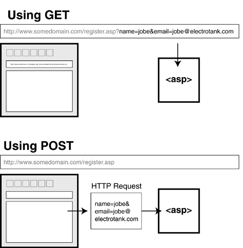

Űrlapok kezelése: HTTP Metódusok és Validáció
A mai leckében folytatjuk a Javascript megismerését. A korábbiakban megtanultuk, hogyan kezeljünk kliens oldalon adatokat (objektumok), amelyeket egy tömbben tárolunk. Most a kliens-szerver közötti kommunikációval fogunk foglalkozni. A weben több fajta technológia is rendelkezésre áll, amelyek segítségével kommunikáció végezhető résztvevők között, mi a HTTP protokollra fogunk fókuszálni.
Kliens, Szerver és a Kérés
Első lépésként tisztázzuk, hogy
- Kliens: A böngésző, ahol kitöltöd az űrlapot.
- Szerver: A távoli gép, ami várja az adatokat.
- HTTP Protokoll: A "nyelv", amin beszélgetnek.
Amikor rányomsz a "Küldés" gombra, a böngésző egy HTTP Kérést (Request) csomagol össze. De nem mindegy, hogyan csomagolja! Itt jön képbe a két legfontosabb metódus: a GET és a POST.

GET vs. POST: Mi a különbség?
Képzeld el, hogy levelet küldesz.
GET (A Képeslap):
- Nyílt lap: Mindenki látja, mi van ráírva.
- URL-ben utazik: Az adatok a webcím végére kerülnek (pl.
kereses.php?kulcsszo=cipő). - Mire jó? Kereséshez, szűréshez, olyan adatokhoz, amik nem titkosak. Könyvjelzőzhető!
- Mire NEM jó? Jelszavakhoz (látszik az előzményekben!), túl sok adathoz.
POST (A Lezárt Boríték):
- Rejtett tartalom: Az adat a kérés "testében" (body) utazik, nem a címzésben.
- Nincs az URL-ben: A címsor tiszta marad.
- Mire jó? Regisztrációhoz, bejelentkezéshez, nagy mennyiségű szöveg küldéséhez.
- Mire NEM jó? Nem lehet könyvjelzőzni az eredményt.
Összehasonlító táblázat
| Tulajdonság | GET | POST |
|---|---|---|
| Adatok helye | Az URL-ben (?nev=ertek) |
A kérés testében (Request Body) |
| Láthatóság | Mindenki látja a címsorban | Rejtett (átlagfelhasználó számára) |
| Adatmennyiség | Korlátozott (max pár ezer karakter) | Szinte korlátlan |
| Gyorsítótár (Cache) | A böngésző elmentheti | Nem mentődik el automatikusan |
| Tipikus használat | Keresés, adatlekérés | Bejelentkezés, mentés, rendelés |
Warning
Soha ne használj GET metódust jelszavak vagy bankkártya adatok küldésére! Bárki, aki ránéz a monitorodra vagy a böngészési előzményeidre, látni fogja a jelszót.
Az űrlap felépítése
A HTML-ben a <form> elem attribútumaival szabályozzuk, hova és hogyan menjen az adat.
action: Hova? A szerver címe (URL), ami feldolgozza az adatot.method: Hogyan? Itt adjuk meg, hogyGETvagyPOST.
<!-- Példa egy biztonságosabb, adatküldő űrlapra -->
<form id="loginForm" action="https://httpbin.org/post" method="POST">
<label for="user">Felhasználónév:</label>
<input type="text" id="user" name="username">
<label for="pass">Jelszó:</label>
<input type="password" id="pass" name="password">
<button type="submit">Belépés</button>
</form>
HTML Beviteli Mezők
A HTML űrlapok lelke az <input> elem. Azt, hogy hogyan néz ki és hogyan viselkedik, a type="..." attribútum határozza meg.
Szöveges beviteli mezők
Ezek a leggyakoribbak. Mindegyiknél az elem.value adja vissza a beírt szöveget stringként.
type="text" (Egysoros szöveg)
A legáltalánosabb mező. Nincs benne extra logika, bármit elfogad.
- Használat: Név, felhasználónév, cím, tárgy.
- HTML:
<input type="text" placeholder="Pl. Kovács Béla">
type="password" (Jelszó)
Ugyanaz, mint a text, de a karaktereket elrejti (általában pöttyökkel).
- Használat: Jelszavak, PIN kódok.
- Fontos: Ez csak vizuális védelem! A hálózaton titkosítás nélkül (HTTPS) ugyanúgy látható lenne.
- HTML:
<input type="password">
type="email" (Email cím)
Mobiltelefonon megnyitja a @ jelet tartalmazó billentyűzetet. Alapvető formai ellenőrzést végez (pl. kell bele @ jel).
- Használat: Email címek.
- HTML:
<input type="email">
<textarea> (Többsoros szöveg)
Ez a kakukktojás, mert ez nem <input> típus, hanem egy külön HTML tag, de ide tartozik.
- Használat: Üzenetek, megjegyzések, leírások.
- HTML:
<textarea rows="4" cols="50"></textarea> - JS: Ugyanúgy
.value-val olvassuk ki.
Számok és Dátumok
type="number" (Szám)
Csak számokat enged beírni. Mobilon megnyitja a számbillentyűzetet.
- Extrák:
min,max(korlátok),step(lépésköz). - HTML:
<input type="number" min="1" max="100"> - JS:
.value-t ad vissza (ami string!), ha számként kell, használd aNumber(elem.value)-t.
type="date" (Dátumválasztó)
Megjelenít egy naptárat (date picker).
- Használat: Születésnap, foglalási időpont.
- HTML:
<input type="date"> - JS: A dátumot
YYYY-MM-DDformátumú stringként adja vissza (pl. "2023-10-27").
Kiválasztók (Choice Inputs)
Itt trükkösebb a JavaScript, mert nem mindig a .value a lényeg.
type="checkbox" (Jelölőnégyzet)
Kétállapotú kapcsoló: vagy be van pipálva, vagy nincs.
- Használat: "Elfogadom a feltételeket", "Hírlevél feliratkozás".
- HTML:
<input type="checkbox" id="aszf"> <label for="aszf">Elfogadom</label> - JS: Fontos! Itt nem a
.value-t nézzük, hanem a.checkedtulajdonságot, amitruevagyfalse.if (document.getElementById('aszf').checked) { ... }
type="radio" (Rádiógomb)
Amikor több opcióból csak EGYET lehet választani.
- Működés: A csoportosítást a
nameattribútum végzi. Amelyiknek ugyanaz a neve, azok tartoznak egy csoportba. - Használat: Nem/Igen, Fizetési mód választás.
- HTML:
<input type="radio" name="nem" value="ferfi"> Férfi <input type="radio" name="nem" value="no"> Nő - JS: Azt kell megkeresni, amelyik
.checkedtulajdonsága igaz.
<select> (Legördülő lista / Dropdown)
Helytakarékos megoldás sok opció esetén.
- HTML:
<select id="varos"> <option value="bp">Budapest</option> <option value="db">Debrecen</option> </select> - JS:
document.getElementById('varos').valuevisszaadja a kiválasztottoptionvalue értékét (pl. "bp").
Speciális Inputok
type="file" (Fájlfeltöltés)
Lehetővé teszi fájlok kiválasztását a számítógépről.
- HTML:
<input type="file" accept="image/png, image/jpeg"> - JS: Itt a
.filestömböt használjuk a.valuehelyett a fájl adatainak eléréséhez.
type="hidden" (Rejtett mező)
A felhasználó számára láthatatlan, de az űrlap elküldésekor az adat utazik a szerverre.
- Használat: Azonosítók (ID), biztonsági tokenek küldése.
- HTML:
<input type="hidden" name="userId" value="12345">
Összefoglaló Referencia Táblázat
Típus (type="...") |
Mire jó? | JS érték lekérése | JS ellenőrzés példa |
|---|---|---|---|
text |
Általános szöveg | .value |
.value === "" |
password |
Titkosított szöveg | .value |
.value.length < 8 |
email |
Email cím | .value |
.validity.valid |
number |
Számok | .value |
Number(elem.value) > 18 |
checkbox |
Igen/Nem kapcsoló | .checked |
!elem.checked |
radio |
Választás listából | .checked |
(a csoportot kell vizsgálni) |
date |
Dátum | .value |
(string összehasonlítás) |
<select> |
Legördülő lista | .value |
.value === "valasztas" |
JavaScript Validáció és Beküldés
A JavaScript feladata a "kapuőr" szerep. Megvizsgálja a boríték tartalmát, mielőtt a postás (a böngésző) elvinné.
A logika lépései:
- Eseményfigyelés: A
submitesemény elkapása. - Validáció: Ellenőrizzük, hogy a mezők megfelelően vannak-e kitöltve.
- Döntés (Control Flow):
- Ha hiba van:
event.preventDefault()-> Megállítjuk a folyamatot, és hibaüzenetet adunk. - Ha minden oké: Nem hívjuk meg a preventDefault-ot. Hagyjuk, hogy a HTML
method="POST"beállítása érvényesüljön, és az adatok elinduljanak a szerver felé.
- Ha hiba van:
Gyakorlati Példa (Teljes kód)
Ez a kód egy bejelentkezést szimulál. Ha helyesek az adatok, elküldi őket a httpbin.org-ra, ahol láthatod, hogy POST kéréssel érkeztek meg.
<!DOCTYPE html>
<html lang="hu">
<head>
<meta charset="UTF-8">
<meta name="viewport" content="width=device-width, initial-scale=1.0">
<title>Mindent Bele Űrlap - Validációval</title>
<style>
body { font-family: 'Segoe UI', Tahoma, Geneva, Verdana, sans-serif; background-color: #f4f4f9; padding: 20px; display: flex; justify-content: center; }
.container { background: white; padding: 30px; border-radius: 8px; box-shadow: 0 4px 15px rgba(0,0,0,0.1); max-width: 600px; width: 100%; }
h1 { text-align: center; color: #333; }
p.info { font-size: 0.9em; color: #666; text-align: center; margin-bottom: 20px; }
.form-group { margin-bottom: 20px; }
label { display: block; margin-bottom: 8px; font-weight: bold; color: #555; }
/* Input stílusok */
input[type="text"], input[type="email"], input[type="password"],
input[type="number"], input[type="date"], select, textarea, input[type="file"] {
width: 100%;
padding: 10px;
border: 1px solid #ccc;
border-radius: 4px;
box-sizing: border-box; /* Hogy a padding ne növelje a szélességet */
font-size: 16px;
}
/* Checkbox és Radio stílusok */
.radio-group label, .checkbox-group label { display: inline; font-weight: normal; margin-right: 15px; }
input[type="radio"], input[type="checkbox"] { transform: scale(1.2); margin-right: 5px; }
/* Gomb stílus */
button { width: 100%; padding: 12px; background-color: #28a745; color: white; border: none; border-radius: 4px; cursor: pointer; font-size: 16px; font-weight: bold; transition: background 0.3s; }
button:hover { background-color: #218838; }
/* Hibaüzenetek */
.error-msg { color: #dc3545; font-size: 0.85em; margin-top: 5px; height: 1.2em; }
/* Sikeres validáció jelzésére (opcionális) */
input.input-error { border-color: #dc3545; background-color: #fff8f8; }
</style>
</head>
<body>
<div class="container">
<h1>Regisztrációs Űrlap</h1>
<p class="info">Töltsd ki az adatokat! A "Küldés" gomb után a httpbin.org jeleníti meg a szerverre érkezett adatokat.</p>
<!--
enctype="multipart/form-data": Ez kötelező, ha fájlt is küldünk!
A httpbin a fájlokat a "files", az adatokat a "form" részben mutatja majd.
-->
<form id="fullForm" action="https://httpbin.org/post" method="POST" enctype="multipart/form-data">
<!-- REJTETT MEZŐ (Pl. felhasználó azonosító) -->
<input type="hidden" name="user_id" value="UID_998877">
<!-- 1. SZÖVEG -->
<div class="form-group">
<label for="fullname">Teljes név:</label>
<input type="text" id="fullname" name="fullname" placeholder="Pl. Kiss Anna">
<div id="error-name" class="error-msg"></div>
</div>
<!-- 2. EMAIL -->
<div class="form-group">
<label for="email">Email cím:</label>
<input type="email" id="email" name="email" placeholder="pelda@mail.com">
<div id="error-email" class="error-msg"></div>
</div>
<!-- 3. JELSZÓ -->
<div class="form-group">
<label for="password">Jelszó (min. 6 karakter):</label>
<input type="password" id="password" name="password">
<div id="error-pass" class="error-msg"></div>
</div>
<!-- 4. DÁTUM és 5. SZÁM -->
<div style="display: flex; gap: 15px;">
<div class="form-group" style="flex: 1;">
<label for="birthdate">Születési dátum:</label>
<input type="date" id="birthdate" name="birthdate">
<div id="error-date" class="error-msg"></div>
</div>
<div class="form-group" style="flex: 1;">
<label for="age">Életkor (18+):</label>
<input type="number" id="age" name="age" min="1">
<div id="error-age" class="error-msg"></div>
</div>
</div>
<!-- 6. RÁDIÓ GOMBOK (Csak egy választható) -->
<div class="form-group radio-group">
<label style="display:block; margin-bottom:10px;">Nem:</label>
<input type="radio" id="female" name="gender" value="no" checked>
<label for="female">Nő</label>
<input type="radio" id="male" name="gender" value="ferfi">
<label for="male">Férfi</label>
<input type="radio" id="other" name="gender" value="egyeb">
<label for="other">Egyéb</label>
</div>
<!-- 7. SELECT (Legördülő) -->
<div class="form-group">
<label for="position">Munkakör:</label>
<select id="position" name="job_position">
<option value="">-- Válassz egyet --</option>
<option value="developer">Fejlesztő</option>
<option value="designer">Designer</option>
<option value="manager">Menedzser</option>
</select>
<div id="error-job" class="error-msg"></div>
</div>
<!-- 8. FÁJL FELTÖLTÉS -->
<div class="form-group">
<label for="profile_pic">Profilkép feltöltése:</label>
<input type="file" id="profile_pic" name="profile_pic" accept="image/*">
</div>
<!-- 9. TEXTAREA (Hosszú szöveg) -->
<div class="form-group">
<label for="bio">Rövid bemutatkozás:</label>
<textarea id="bio" name="bio" rows="4" placeholder="Írj magadról pár mondatot..."></textarea>
</div>
<!-- 10. CHECKBOX (Jelölőnégyzet) -->
<div class="form-group checkbox-group">
<input type="checkbox" id="terms" name="terms_accepted">
<label for="terms">Elfogadom az Adatvédelmi Nyilatkozatot *</label>
<div id="error-terms" class="error-msg"></div>
</div>
<button type="submit">Regisztráció Küldése</button>
</form>
</div>
<script>
const form = document.getElementById('fullForm');
// Elemek referenciái
const nameInput = document.getElementById('fullname');
const passInput = document.getElementById('password');
const ageInput = document.getElementById('age');
const jobInput = document.getElementById('position');
const termsInput = document.getElementById('terms'); // Checkbox
// Hibaüzenet tárolók
const errorName = document.getElementById('error-name');
const errorPass = document.getElementById('error-pass');
const errorAge = document.getElementById('error-age');
const errorJob = document.getElementById('error-job');
const errorTerms = document.getElementById('error-terms');
form.addEventListener('submit', function(event) {
let isValid = true;
// 1. Töröljük az előző hibaüzeneteket és stílusokat
const errors = document.querySelectorAll('.error-msg');
errors.forEach(el => el.textContent = '');
const inputs = document.querySelectorAll('input, select');
inputs.forEach(el => el.classList.remove('input-error'));
// --- VALIDÁCIÓK ---
// Név ellenőrzése (nem lehet üres)
if (nameInput.value.trim() === "") {
errorName.textContent = "A név megadása kötelező!";
nameInput.classList.add('input-error');
isValid = false;
}
// Jelszó hossza (min 6)
if (passInput.value.length < 6) {
errorPass.textContent = "A jelszó túl rövid (min. 6 karakter).";
passInput.classList.add('input-error');
isValid = false;
}
// Életkor vizsgálat (számmá alakítás és értékvizsgálat)
// Megj: a HTML type="number" már korlátoz, de JS-ben is érdemes csekkolni
if (Number(ageInput.value) < 18) {
errorAge.textContent = "Csak 18 éven felüliek regisztrálhatnak.";
ageInput.classList.add('input-error');
isValid = false;
}
// Select ellenőrzése (választott-e valamit?)
if (jobInput.value === "") {
errorJob.textContent = "Kérlek válassz munkakört!";
jobInput.classList.add('input-error');
isValid = false;
}
// Checkbox ellenőrzése (kötelező pipa) - .checked tulajdonság!
if (!termsInput.checked) {
errorTerms.textContent = "A regisztrációhoz el kell fogadnod a feltételeket.";
isValid = false;
}
// --- DÖNTÉS ---
if (!isValid) {
event.preventDefault(); // Megállítjuk a küldést, ha hiba van
console.log("Hiba az űrlapon!");
} else {
// Ha minden OK, engedjük tovább a httpbin-re
console.log("Minden adat rendben, küldés...");
}
});
</script>
</body>
</html>